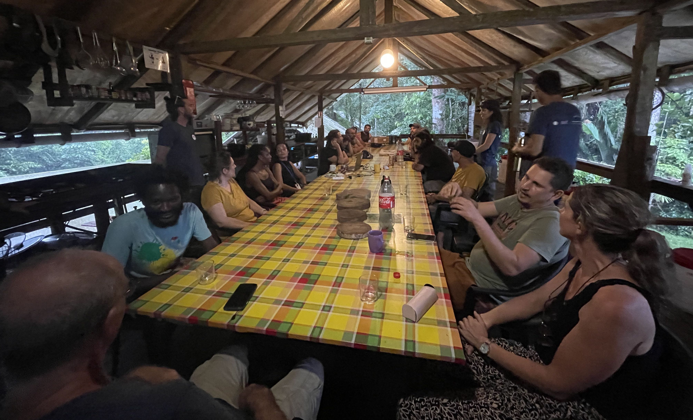

Journal Club
Liste des références:
- Abellan-Schneyder, Isabel, Monica S. Matchado, Sandra Reitmeier, Alina Sommer, Zeno Sewald, Jan Baumbach, Markus List, et Klaus Neuhaus. 2021. « Primer, Pipelines, Parameters: Issues in 16S rRNA Gene Sequencing ». mSphere 6 (1). https://doi.org/10.1128/mSphere.01202-20.
- Abeynayake, Shamila Weerakoon, Sonia Fiorito, Adrian Dinsdale, Mark Whattam, Bill Crowe, Kate Sparks, Paul Richard Campbell, et Cherie Gambley. 2021. « A Rapid and Cost-Effective Identification of Invertebrate Pests at the Borders Using MinION Sequencing of DNA Barcodes ». Genes 12 (8): 1138. https://doi.org/10.3390/genes12081138.
- Abrams, Jesse F., Lisa A. Hörig, Robert Brozovic, Jan Axtner, Alex Crampton-Platt, Azlan Mohamed, Seth T. Wong, Rahel Sollmann, Douglas W. Yu, et Andreas Wilting. 2019. « Shifting up a gear with iDNA: From mammal detection events to standardised surveys ». Journal of Applied Ecology 56 (7): 1637‑48. https://doi.org/10.1111/1365-2664.13411.
- Chang, Jia Jin Marc, Yin Cheong Aden Ip, Andrew G. Bauman, et Danwei Huang. 2020. « MinION-in-ARMS: Nanopore Sequencing to Expedite Barcoding of Specimen-Rich Macrofaunal Samples From Autonomous Reef Monitoring Structures ». Frontiers in Marine Science 7: 448. https://doi.org/10.3389/fmars.2020.00448.
- Clarke, Erik L., Sesh A. Sundararaman, Stephanie N. Seifert, Frederic D. Bushman, Beatrice H. Hahn, et Dustin Brisson. 2017. « Swga: A Primer Design Toolkit for Selective Whole Genome Amplification ». Bioinformatics (Oxford, England) 33 (14): 2071‑77. https://doi.org/10.1093/bioinformatics/btx118.
- Dejean, Tony, Alice Valentini, Antoine Duparc, Stéphanie Pellier-Cuit, François Pompanon, Pierre Taberlet, et Claude Miaud. 2011. « Persistence of Environmental DNA in Freshwater Ecosystems ». PloS One 6 (8): e23398. https://doi.org/10.1371/journal.pone.0023398.
- Dwivedi-Yu, Jane A., Zachary J. Oppler, Matthew W. Mitchell, Yun S. Song, et Dustin Brisson. 2023. « A Fast Machine-Learning-Guided Primer Design Pipeline for Selective Whole Genome Amplification ». PLOS Computational Biology 19 (4): e1010137. https://doi.org/10.1371/journal.pcbi.1010137.
- Ficetola, Gentile Francesco, Claude Miaud, François Pompanon, et Pierre Taberlet. 2008. « Species Detection Using Environmental DNA from Water Samples ». Biology Letters 4 (4): 423‑25. https://doi.org/10.1098/rsbl.2008.0118.
- Garvin, Alex M., et Anja Fritsch. 2013. « Purifying and Concentrating Genomic DNA from Mock Forensic Samples Using Millipore Amicon Filters ». Journal of Forensic Sciences 58 Suppl 1 (janvier): S173-175. https://doi.org/10.1111/1556-4029.12002.
- Goldberg, Caren S, David S Pilliod, Robert S Arkle, et Lisette P Waits. 2011. « Molecular Detection of Vertebrates in Stream Water: A Demonstration Using Rocky Mountain Tailed Frogs and Idaho Giant Salamanders ». PloS One 6 (7): e22746. https://doi.org/10.1371/journal.pone.0022746.
- Leichty, Aaron R., et Dustin Brisson. 2014. « Selective Whole Genome Amplification for Resequencing Target Microbial Species from Complex Natural Samples ». Genetics 198 (2): 473‑81. https://doi.org/10.1534/genetics.114.165498.
- Maestri, Simone, Emanuela Cosentino, Marta Paterno, Hendrik Freitag, Jhoana M. Garces, Luca Marcolungo, Massimiliano Alfano, et al. 2019. « A Rapid and Accurate MinION-Based Workflow for Tracking Species Biodiversity in the Field ». Genes 10 (6): 468. https://doi.org/10.3390/genes10060468.
- Manske, Felix, Norbert Grundmann, et Wojciech Makalowski. 2020. « MetaGenomic Analysis of Short and Long Reads ». https://doi.org/10.1101/2020.03.13.991190.
- Matsui, Kazuaki, Mie Honjo, et Zenichiro Kawabata. 2001. « Estimation of the fate of dissolved DNA in thermally stratified lake water from the stability of exogenous plasmid DNA ». Aquatic Microbial Ecology 26 (1): 95‑102. https://doi.org/10.3354/ame026095.
- Ordóñez, Carlos D., Carmen Mayoral-Campos, Conceição Egas, et Modesto Redrejo-Rodríguez. 2023. « A Primer-Independent DNA Polymerase-Based Method for Competent Whole-Genome Amplification of Intermediate to High GC Sequences ». NAR Genomics and Bioinformatics 5 (3): lqad073. https://doi.org/10.1093/nargab/lqad073.
- Povilaitis, Tadas, Gediminas Alzbutas, Rasa Sukackaite, Juozas Siurkus, et Remigijus Skirgaila. 2016. « In Vitro Evolution of Phi29 DNA Polymerase Using Isothermal Compartmentalized Self Replication Technique ». Protein Engineering, Design & Selection: PEDS 29 (12): 617‑28. https://doi.org/10.1093/protein/gzw052.
- Sahlin, Kristoffer, Marisa C. W. Lim, et Stefan Prost. 2021. « NGSpeciesID: DNA Barcode and Amplicon Consensus Generation from Long-Read Sequencing Data ». Ecology and Evolution 11 (3): 1392‑98. https://doi.org/10.1002/ece3.7146.
- Seah, Adeline, Marisa C. W. Lim, Denise McAloose, Stefan Prost, et Tracie A. Seimon. 2020. « MinION-Based DNA Barcoding of Preserved and Non-Invasively Collected Wildlife Samples ». Genes 11 (4): E445. https://doi.org/10.3390/genes11040445.
- Singh, Utkarsha A., Mukta Kumari, et Soumya Iyengar. 2018. « Method for Improving the Quality of Genomic DNA Obtained from Minute Quantities of Tissue and Blood Samples Using Chelex 100 Resin ». Biological Procedures Online 20 (1): 1‑8. https://doi.org/10.1186/s12575-018-0077-6.
- Srivathsan, Amrita, Leshon Lee, Kazutaka Katoh, Emily Hartop, Sujatha Narayanan Kutty, Johnathan Wong, Darren Yeo, et Rudolf Meier. 2021. « ONTbarcoder and MinION Barcodes Aid Biodiversity Discovery and Identification by Everyone, for Everyone ». BMC Biology 19 (1): 1‑21. https://doi.org/10.1186/s12915-021-01141-x.
- Taberlet, Pierre, Eric Coissac, Mehrdad Hajibabaei, et Loren H. Rieseberg. 2012. « Environmental DNA ». Molecular Ecology 21 (8): 1789‑93. https://doi.org/10.1111/j.1365-294X.2012.05542.x. Taberlet, Pierre, Eric Coissac, François Pompanon, Christian Brochmann, et Eske Willerslev. 2012. « Towards Next-Generation Biodiversity Assessment Using DNA Metabarcoding ». Molecular Ecology 21 (8): 2045‑50. https://doi.org/10.1111/j.1365-294X.2012.05470.x.
- Thurlow, Charles M., Sandeep J. Joseph, Lilia Ganova-Raeva, Samantha S. Katz, Lara Pereira, Cheng Chen, Alyssa Debra, et al. s. d. « Selective Whole-Genome Amplification as a Tool to Enrich Specimens with Low Treponema pallidum Genomic DNA Copies for Whole-Genome Sequencing ». mSphere 7 (3): e00009-22. https://doi.org/10.1128/msphere.00009-22.
- Vasiljevic, Nina, Marisa Lim, Emily Humble, Adeline Seah, Adelgunde Kratzer, Nadja V. Morf, Stefan Prost, et Rob Ogden. 2021. « Developmental Validation of Oxford Nanopore Technology MinION Sequence Data and the NGSpeciesID Bioinformatic Pipeline for Forensic Genetic Species Identification ». Forensic Science International. Genetics 53 (juillet): 102493. https://doi.org/10.1016/j.fsigen.2021.102493.
- Wang, Wendy Y., Amrita Srivathsan, Maosheng Foo, Seiki K. Yamane, et Rudolf Meier. 2018. « Sorting Specimen-Rich Invertebrate Samples with Cost-Effective NGS Barcodes: Validating a Reverse Workflow for Specimen Processing ». Molecular Ecology Resources 18 (3): 490‑501. https://doi.org/10.1111/1755-0998.12751.
Web resources and databases